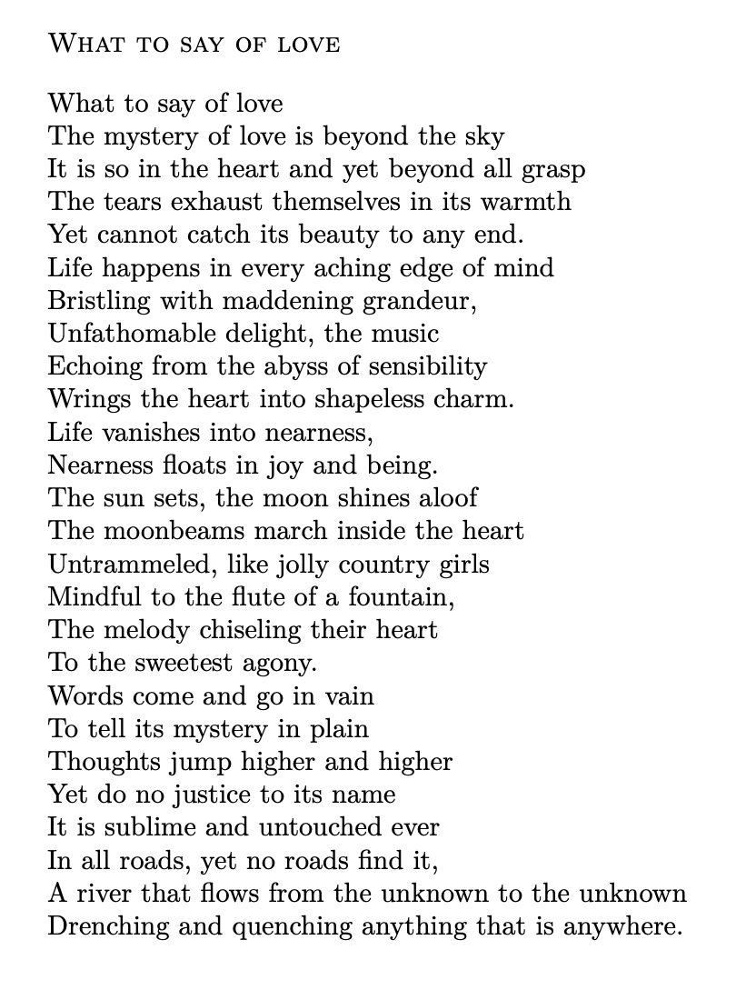

Poetry
I love to read and write poetries, especially of experiential or philosophical nature, sometimes using allegories from nature and its wonders and motivations gleaned therefrom.
Bartleby.com and Poetseers.org are my favorite websites for poetries.
Some favorite verses are
-
Ode: Intimations of Immortality from Recollections of Early Childhood - William Wordsworth
-
O Solitude! if I must with thee dwell - John Keats
-
Eternity – William Blake - William Blake
-
Kali The Mother - Swami Vivekananda
-
The Song of The Sannyasin - Swami Vivekananda
-
Sakhar Proti (in Bengali) - Swami Vivekananda
English translation -
Nachuk Tahate Shyama (in Bengali) - Swami Vivekananda
-
Extracts from Childe Harold’s Pilgrimage: Ocean - Lord Byron
-
To One Who Has Been Long in City Pent – John Keats
-
She Walks in Beauty - Lord Byron
-
Invictus - William Ernest Henley
-
The Road Not Taken - Robert Frost
-
I Wandered Lonely As a Cloud - William Wordsworth
-
All the world’s a stage, As You Like It, Act II, Scene VII - William Shakespeare
-
Acquainted with the Night - Robert Frost
-
Ode to the West Wind - Percy Bysshe Shelley
-
By the Shore – Edward Carpenter
-
From The Solitary Reaper – William Wordsworth
-
A Dream Within a Dream – Edgar Allan Poe
Here are few of my own works. Feel free to share but with proper credits.


From the Bottomless to Limitlessness
Link to online publication